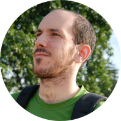
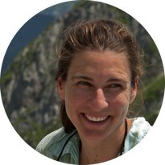

¿Quiénes somos?
Sergio Ripoll Gómez
“Soy un biólogo con una gran afición por el mundo vegetal y por la divulgación. Desde siempre me han fascinado las plantas, su complejo funcionamiento, sus adaptaciones y sus historias a lo largo de su existencia, la nuestra, y él cómo hemos convivido e interactuado con ellas durante tanto tiempo.”
Olga Mayoral García-Berlanga
“Soy botánica, profesora del Departamento de Didáctica de las Ciencias de la Universitat de València. Uno de mis mayores empeños es dar a conocer el mundo de las plantas, y de la biología, a aquellas personas que no han tenido la oportunidad de estudiar una carrera relacionada con la naturaleza. Creo que las plantas son un recurso didáctico de primer orden al que se le puede sacar mucho partido con algo de imaginación.”
Daniel Caamaño Panadero

"Soy Ingeniero superior en informática y actualmente trabajo como desarrollador de páginas web. Interesado en el diseño multimedia y aficionado al mundo natural desde siempre, veo en este proyecto una buena manera de aprender y mejorar mis conocimientos en varios campos."
Contacta con nosotros
Si tienes información sobre una planta de tu entorno o sobre alguna especie que te interesa, puedes escribirnos para que la incluyamos en nuestra base de datos. Además, si te has encontrado un código QR roto, o simplemente no está donde debería de estar, avísanos para que lo arreglemos lo antes posible dejando un mensaje tanto en las redes sociales como en el siguiente correo:


quicknatura@gmail.com
¡Apreciamos mucho tu colaboración!
Agradecimientos:
A Nacho Barrachina Muñoz, Manuel Alcántara Olivares, José López Bolós, Javier Ortega Marcos y Víctor de la Torre Hortelano
Traducciones por: Adriana Pallero Singleton
Qui som?
Sergio Ripoll Gómez
"Sóc un biòleg amb una gran afició pel món vegetal i per la divulgació. Des de sempre m'han fascinat les plantes, el seu complex funcionament, les seues adaptacions i les seues històries al llarg de la seua existència i de la nostra, i de la nostra convivència e interacció amb elles durant tant de temps."
Olga Mayoral García-Berlanga
"Sóc botànica, professora del Departament de Didàctica de les Ciències de la Universitat de València. Un dels meus majors esforços és donar a conèixer el món de les plantes, i de la biologia, a aquelles persones que no han tingut l'oportunitat d'estudiar una carrera relacionada amb la natura. Crec que les plantes són un recurs didàctic de primer ordre al qual se li pot treure molt partit amb una mica d'imaginació.”
Daniel Caamaño Panadero
"Sóc Enginyer superior en informàtica i actualment treball com a desenvolupador de pàgines web. Interessat en el disseny multimèdia i aficionat al món natural des de sempre, veig en aquest projecte una bona manera d'aprendre i millorar els meus coneixements en diversos camps."
Contacta amb nosaltres
Si t'has trobat un codi QR trencat, o simplement no està on hauria d'estar, avisa'ns perquè ho arreglem al més aviat possible deixant un missatge aquí:


Si a més, vols simplement deixar la teva opinió, suggeriments, etc, escriu-nos a:
quicknatura@gmail.com
Apreciem molt la teua col•laboració!
Agraïments:
A Nacho Barrachina Muñoz, Manuel Alcántara Olivares, José López Bolós, Javier Ortega Marcos i Víctor de la Torre Hortelano.
Traduccions: Adriana Pallero Singleton
About us
Sergio Ripoll Gómez
“I am a biologist passionate about the plant world and science education. I have always been fascinated by plants, their complex behaviour, their adaptations and history throughout their and our existence, and how we have cohabited and interacted with them over time.”
Olga Mayoral García-Berlanga
“I am a botanist and professor at the Science Didactics Department of the University of Valencia. One of my biggest endeavours is to raise awareness of plants and biology for people who have not had the chance to study a nature-related degree. I believe plants are a first-rate didactic resource that can be tapped into with a little imagination.”
Daniel Caamaño Panadero
“I am a Computer Engineer and currently work as webpage developer. My interests include multimedia design and the natural world. I see this project as a great way of learning and improving my skills in several fields.”
Contact us
If you find a broken QR code or somewhere the code shouldn’t be, please get in touch with us so that it can be fixed as soon as possible:


Or, if you would simply like to share your opinion or make a suggestion, you can e-mail us at:
quicknatura@gmail.com
We really appreciate your collaboration!
Acknowledgements:
To Nacho Barrachina Muñoz, Manuel Alcántara Olivares, José López Bolós, Javier Ortega Marcos and Víctor de la Torre Hortelano.
Translation: Adriana Pallero Singleton